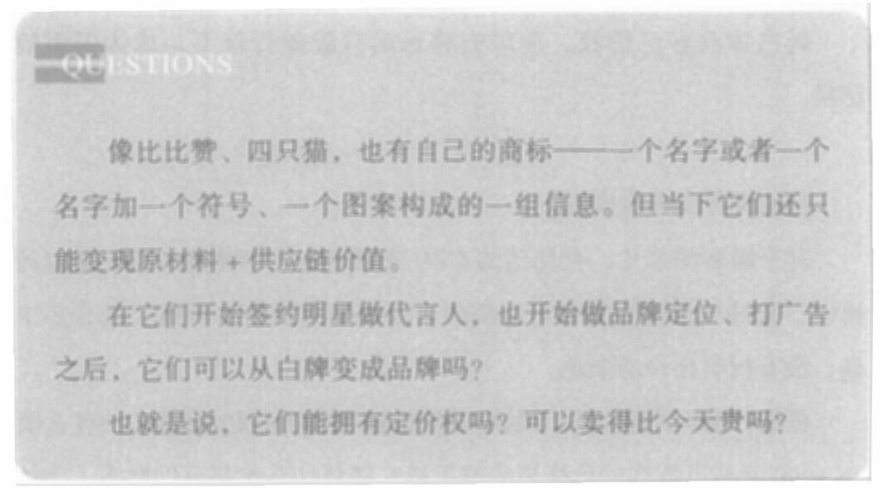

无论商标还是品牌，都是名字、符号、图案构成的一组信息。为什么同样是一组信息，在被你的眼睛接触到之后，会有的有感觉，有的没感觉，会影响你的判断和选择?

二、网红 VS 大牌
当我们谈到品牌的时候，很多概念和名字会一起冒出来。
比如老牌：稻香村的糕点，格力的空调，那些开在商场二层，名为某某人、某某姿、某某鸟的服装；
比如网红：花西子的眉笔，茶颜悦色的奶茶，那些排着长长队伍、女孩子们举着手机自拍的打卡点；
比如大牌：苹果的手机，可口可乐，那些开在商场一层或者免税店里的奢侈品牌。
那么，当白牌想成为一个品牌，是要做网红还是大牌?
成为这二者，需要做的工作有什么不一样? 它们可以互相转化吗?
090